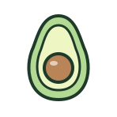

Tina ate here · Apr 2026
Yolk & Crumb
“You're in dire knead of this bakery in your life…I'm still shook.”
“You can eat more hole foods at Daphne's Tears.”
LTEF · Place · Daphne's Tears
Bagel sandwiches and holiday pies. She’s posted from here 5 times.
Her video plays in TikTok’s own player, so the views and the credit stay with her account. Nothing loads from TikTok until you press play.
LTEF · Place · Tina’s video
LTEF · Place · Facts
“You're in dire knead of this bakery in your life…I'm still shook.”
“I've been going bananas for matcha everywhere.”
“This stone bowl will keep your meal pho-king hot.”

“Please try the roasted carrots.”
LTEF · Place · Nearby